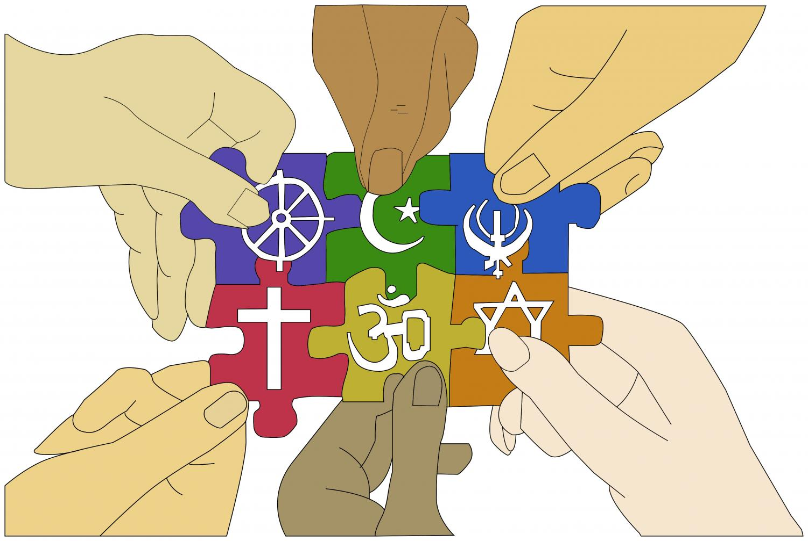

Key Contribution
Shivaji Maharaj founded the Maratha Empire in 1674, creating a powerful and independent kingdom that challenged the dominance of the Mughal Empire in India. His establishment of the empire marked a significant shift in the regional power dynamics of the time.

1.Inclusive Administration:
Shivaji Maharaj appointed individuals from various religious backgrounds to key positions in his administration. Notably, he had Muslim generals and officers in his army, such as Siddi Ibrahim and Rustam E. Dewan. This inclusiveness in his administration reflected his respect for diverse religious traditions and his belief in meritocracy over religious bias.
2.Freedom of Worship:
Shivaji Maharaj allowed his subjects to practice their religions freely. He supported the construction and maintenance of places of worship for different faiths, including Hindu temples, Muslim mosques, and Christian churches. This policy ensured that people of various religious communities could practice their faith without fear of persecution.
3.Secular Policy Framework:
His administration was characterized by a secular policy framework, where religious identity did not affect one's role or status in the government. This was a significant departure from the norm of the time, where rulers often imposed their religious beliefs on their subjects.
4.Cultural Integration:
Shivaji Maharaj’s policies promoted cultural and religious integration within his empire. By fostering an environment of mutual respect and cooperation, he was able to unite a diverse population under his rule, which contributed to the overall stability and success of his administration.
5.Respect for Religious Leaders:
Shivaji Maharaj showed respect for religious leaders and scholars from different communities. He engaged with them in discussions and sought their counsel, demonstrating his appreciation for their contributions to society and culture.